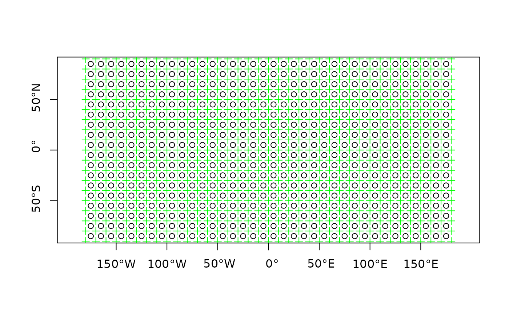
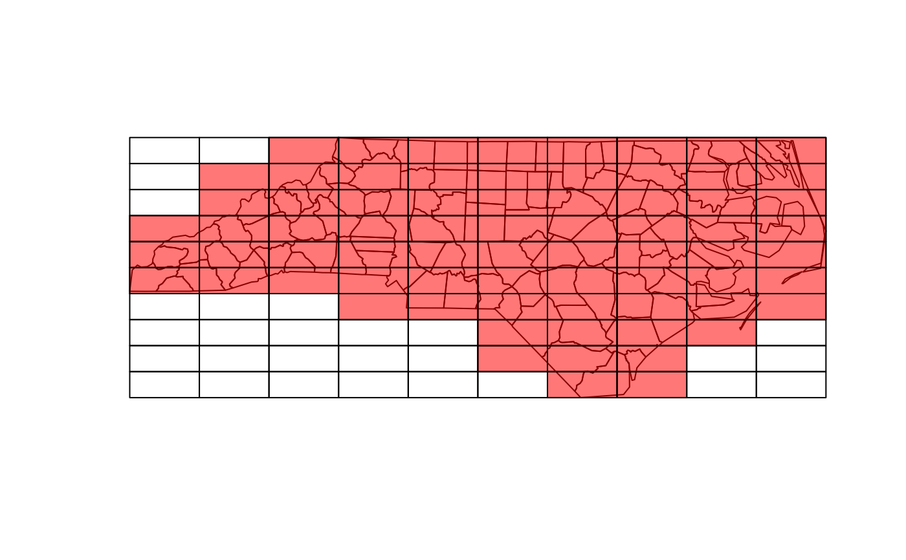

R/make_grid.R
st_make_grid.RdCreate a square or hexagonal grid covering the bounding box of the geometry of an sf or sfc object
target cellsize
numeric of length 2; lower left corner coordinates (x, y) of the grid
integer of length 1 or 2, number of grid cells in x and y direction (columns, rows)
object of class crs; coordinate reference system of the target of the target grid in case argument x is missing, if x is not missing, its crs is inherited.
character; one of: "polygons", "corners", or "centers"
logical; if FALSE, create hexagonal grid
logical; if TRUE generate flat topped hexagons, else generate pointy topped
Object of class sfc (simple feature geometry list column) with, depending on what and square,
square or hexagonal polygons, corner points of these polygons, or center points of these polygons.
plot(st_make_grid(what = "centers"), axes = TRUE)
plot(st_make_grid(what = "corners"), add = TRUE, col = 'green', pch=3)

sfc = st_sfc(st_polygon(list(rbind(c(0,0), c(1,0), c(1,1), c(0,0)))))
plot(st_make_grid(sfc, cellsize = .1, square = FALSE))
plot(sfc, add = TRUE)
# non-default offset:
plot(st_make_grid(sfc, cellsize = .1, square = FALSE, offset = c(0, .05 / (sqrt(3)/2))))
plot(sfc, add = TRUE)
nc = st_read(system.file("shape/nc.shp", package="sf"))
#> Reading layer `nc' from data source
#> `/tmp/RtmpE970FJ/temp_libpath133ab3bd3fe93/sf/shape/nc.shp'
#> using driver `ESRI Shapefile'
#> Simple feature collection with 100 features and 14 fields
#> Geometry type: MULTIPOLYGON
#> Dimension: XY
#> Bounding box: xmin: -84.32385 ymin: 33.88199 xmax: -75.45698 ymax: 36.58965
#> Geodetic CRS: NAD27
g = st_make_grid(nc)
plot(g)
plot(st_geometry(nc), add = TRUE)
# g[nc] selects cells that intersect with nc:
plot(g[nc], col = '#ff000088', add = TRUE)
